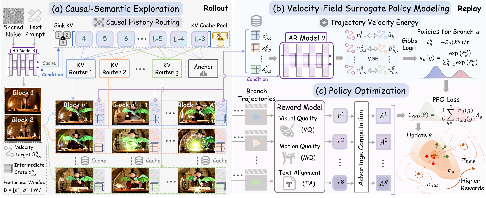

KVPO: ODE-Native GRPO for Autoregressive Video Alignment via KV Semantic Exploration
Abstract
Aligning streaming autoregressive (AR) video generators with human preferences is challenging. Existing reinforcement learning methods predominantly rely on noise-based exploration and SDE-based surrogate policies that are mismatched to the deterministic ODE dynamics of distilled AR models, and tend to perturb low-level appearance rather than the high-level semantic storyline progression critical for long-horizon coherence. To address these limitations, we present KVPO, an ODE-native online Group Relative Policy Optimization (GRPO) framework for aligning streaming video generators. For diversity exploration, KVPO introduces a causal-semantic exploration paradigm that relocates the source of variation from stochastic noise to the historical KV cache. By stochastically routing historical KV entries, it constructs semantically diverse generation branches that remain strictly on the data manifold. For policy modeling, KVPO introduces a velocity-field surrogate policy based on Trajectory Velocity Energy (TVE), which quantifies branch likelihood in flow-matching velocity space and yields a reward-weighted contrastive objective fully consistent with the native ODE formulation. Experiments on multiple distilled AR video generators demonstrate consistent gains in visual quality, motion quality, and text-video alignment across both single-prompt short-video and multi-prompt long-video settings.
Method Overview

Overview of the KVPO training pipeline. Starting from a shared initial noise, the model first performs causal-semantic exploration via stochastic KV routing within a perturbed window to produce diverse candidate branches (a). These branches are then replayed under the unperturbed deployment-time context, where the Trajectory Velocity Energy of each branch is computed and converted into Gibbs-form surrogate branch probabilities to measure their generation likelihood under the current policy (b). Finally, the branches are scored by the reward model, and PPO updates the AR generator toward higher-reward behaviors via a contrastive flow-matching objective (c).
Demos
Citation
If you find this work useful, please consider citing:
@misc{zhang2026kvpoodenativegrpoautoregressive,
title={KVPO: ODE-Native GRPO for Autoregressive Video Alignment via KV Semantic Exploration},
author={Ruicheng Zhang and Kaixi Cong and Jun Zhou and Zhizhou Zhong and Zunnan Xu and Shuiyang Mao and Wei Liu and Xiu Li},
year={2026},
eprint={2605.14278},
archivePrefix={arXiv},
primaryClass={cs.CV},
url={https://arxiv.org/abs/2605.14278},
}